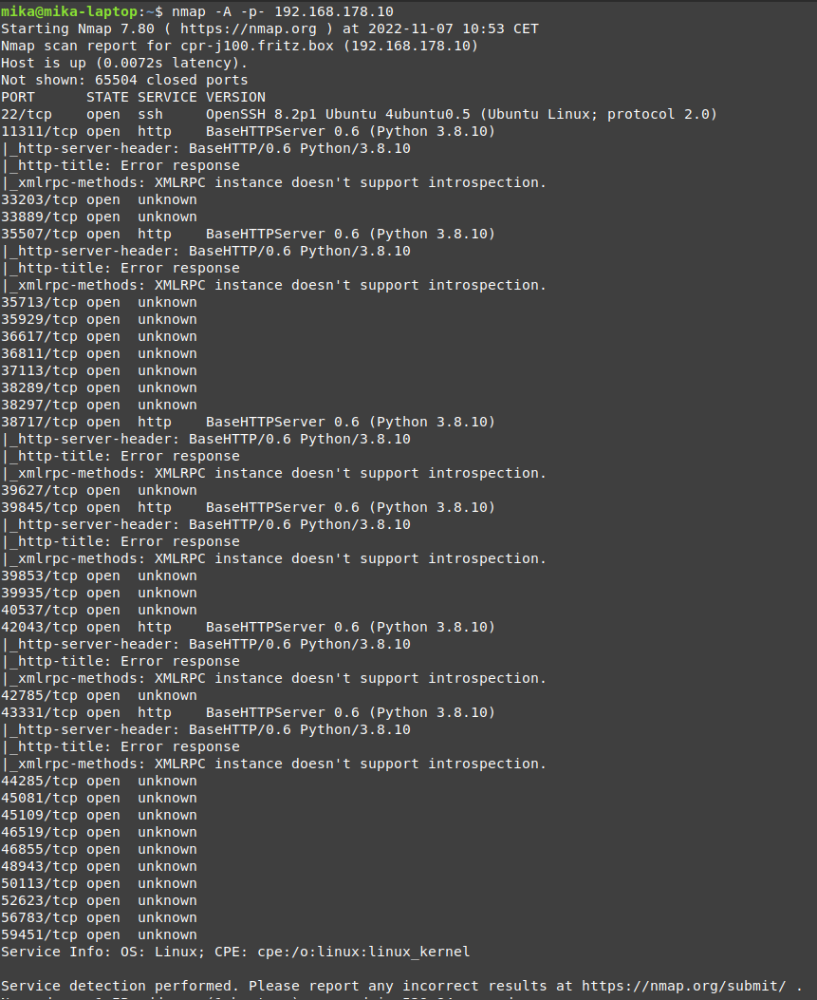

Tactic: Intel Gathering
Technique: Identify Platform
Identifying the platform running on the robot is an essential first step towards employing many other techniques. Knowing the platform (and its version) allows the attacker to zero in on OS specific exploitation techniques that are more effective than general techniques found in, say, software running as a service. Knowing the version of the platform allows the attacker to look for known vulnerabilities related to that specific version.
Technique in practice
Video: Nmap OS scan
Mitigations
Attempting to block service scanners like Nmap would lessen the chance of revealing the OS to the attacker. The version signature can be kept vague too, so that the attacker cannot look for known version-bound vulnerabilities.
Detections
General version scanning detection systems like an IDS can be used to detect attempts at identifying the platform.
Documented incidents with autonomous robots
During a pentest performed on a Jackal robot from Clear Path Robotics, the services that ran on it and were mapped to network ports were scanned with Nmap. The OS was also revealed.
